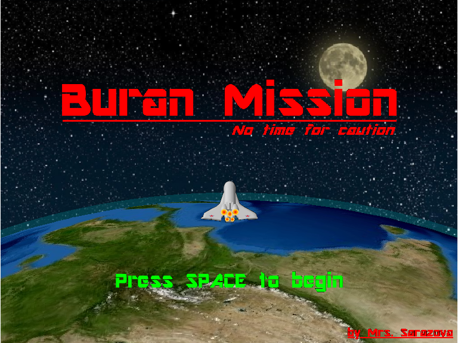

Buran Mission Game, version 2.0.
The program is a simulator of optimal control of a space aircraft. Three techniques of a space aircraft control can be obviously compared and estimated with the program developed: time-optimal control, machine learning based control and manual control. Time-optimal control synthesis bases on the dynamic system condition detailed analysis. The machine learning based control is implemented by dynamic system response to random impact monitoring only. Manual control is implemented using keyboard.
Author: Sarazova E.M. Github: https://github.com/NikaSar/The_Thesis
Contents
- General functions.
- Buran() function.
- Creating of variables.
- Invoke of initialisation functions.
- The main cycle.
- initVariables() function.
- initWindows() function.
- Showing main window.
- Report window.
- GammaLines() function.
- Control_System() function.
- BuranUpdate() function.
- ODESolve() function.
- Initialization of function wrappers.
- Version>=2018.
- Version<2018.
- initFunctions() functions.
- Callbacks.
- stl_KeyPressFcn() function.
- stl_CloseReqFcn() function
- stl_CloseReportReqFcn() function
- stl_ResizeFcn() function.
- Custom functions.
- RandomView() function.
- Resize() function.
- PrintReport() function.
- Auto_Ufcn() function.
- Manual_Ufcn() function.
- NeuralNet_Ufcn() function.
- Neural net functions.
- SOFTMAX() function.
- ELU() function.
General functions.
Buran() function.
Algorithm:
- Creating of variables.
- Initialization of variables.
- Initialization of windows.
- Initialization of wrappers.
- Main cycle.
function Buran(varargin)
clc; % Clear command window. clearvars -except varargin; % Clear variables from memory (except varargin). close all; % Close all figures.
Creating of variables.
% General options. GAME.SCALE = []; % Scale factor. GAME.STATUS = []; % Game status (pause|pregame|game|overgame). GAME.WINDOW_RES = []; % Window resolution. GAME.VERSION = []; % Version of game. % Main Window. ControlAxesHdl = []; % Control axes handle. MainFigureHdl = []; % Main window handle. MainCanvasHdl = []; % Canvas handle. MainAxesHdl = []; % Main axes of main window. % Info. SuccessInfoHdl = []; % Handle of success-string. ScoreInfoHdl = []; % Handle of score-string. OmegaInfoHdl = []; % Handle of w-string. ReadyInfoHdl = []; % Handle of ready-string. TimeInfoHdl = []; % Handle of time-string. % Lines. LineHdl = []; % Handle of (animated) line. GammaLinesHdl = []; % Handle of gamma lines for control axes. PhasePointHdl = []; % Handle of phase point. % Report Window. ReportFigureHdl = []; % Handle of report window. % Axes. ReportAxesHdl1 = []; % Handle of phase axes. ReportAxesHdl2 = []; % Handle of (t, x(1)) axes. ReportAxesHdl3 = []; % Handle of (t, x(2)) axes. ReportAxesHdl4 = []; % Handle of (t, u(1)) axes. ReportAxesHdl5 = []; % Handle of (t, u(2)) axes. % Subplots. ReportSbptHdl1 = []; % Handle of subplot for ReportAxesHdl1. ReportSbptHdl2 = []; % Handle of subplot for ReportAxesHdl2. ReportSbptHdl3 = []; % Handle of subplot for ReportAxesHdl3. ReportSbptHdl4 = []; % Handle of subplot for ReportAxesHdl4. ReportSbptHdl5 = []; % Handle of subplot for ReportAxesHdl5. % Arrows. ArrowsHdl1 = []; % Handle of up_arrow. ArrowsHdl2 = []; % Handle of left_arrow. ArrowsHdl3 = []; % Handle of down_arrow. ArrowsHdl4 = []; % Handle of right_arrow. % Plot Lines. ReportLineUHdl1 = []; % Handle of user control on phase axes. ReportLineUHdl2 = []; % Handle of user control on (t, x(1)) axes. ReportLineUHdl3 = []; % Handle of user control on (t, x(2)) axes. ReportLineUHdl4 = []; % Handle of user control on (t, u(1)) axes. ReportLineUHdl5 = []; % Handle of user control on (t, u(2)) axes. ReportLineBHdl1 = []; % Handle of optimal control on phase axes. ReportLineBHdl2 = []; % Handle of optimal control on (t, x(1)) axes. ReportLineBHdl3 = []; % Handle of optimal control on (t, x(2)) axes. ReportLineBHdl4 = []; % Handle of optimal control on (t, u(1)) axes. ReportLineBHdl5 = []; % Handle of optimal control on (t, u(2)) axes. % Legends. ReportLegendHDL1 =[]; % Handle of plot for phase axes. ReportLegendHDL2 =[]; % Handle of plot for (t, x_s(1)) axes. ReportLegendHDL3 =[]; % Handle of plot for (t, x_s(2)) axes. ReportLegendHDL4 =[]; % Handle of plot for (t, u_s(1)) axes. ReportLegendHDL5 =[]; % Handle of plot for (t, u_s(2)) axes. % Sprites. EarthSpriteHdl = []; % Handle of Earth sprite. BuranSpriteHdl = []; % Handle of Buran sprite. StartSpriteHdl = []; % Handle of start sprite. % Main Window. MainFigureInitPos = []; % Position of Main window. MainFigureSize = []; % Size of main window. MainAxesSize = []; % Size of main axes. % Buran&Earth. XBuran = []; % X grid for Buran sprites. YBuran = []; % Y grid for Buran sprites. XEarth = []; % X grid for Yearth. YEarth = []; % Y grid for Yearth. ZEarth = []; % Z grid for Yearth. % Start. XStart = []; % X grid for Start sprites. YStart = []; % Y grid for Start sprites. % Flight Dynamic. options = []; % ODE options. PITCH_U = []; % Pitch control. YAW_U = []; % Yaw control. GMode = []; % Control mode (user|optimal|neuralnet). Fcn = []; % Control function. K = []; % Gian coefficient. W = []; % W coefficient. % Status of Game. isGameOver = []; % The round over. isPreGame = []; % The round is starting. isPause = []; % The game is paused. isGame = []; % The round is processing. % Other. IDSoundDevice = []; % ID Sound Device. Resources = []; % Resources file for the game. Iteration = []; % Game round. Highscore = []; % Highscore list. ExitReq = []; % Request for exit. OldTime = []; % Last time. PI_180_ = []; % const=180/pi. PI_0_5 = []; % const=0.5*pi. PI_2 = []; % const=2*pi. Player = []; % Music player. WCount = []; % For tips. EarthR = []; % Earth Radius. ECoeff = []; % Coefficient for Earth rotation. SCoeff = []; % Coefficient for Space rotation. YSpace = []; % The height of half of the Space picture. % Function Wrappers. LINEUPDATE = []; % Line draw wrapper. FULLSCREEN = []; % Full Screen wrapper. MINIMIZED = []; % Minimized wrapper. DRAWNOW = []; % All draw wrapper.
Invoke of initialisation functions.
- initVariables.
- initWindows.
- initFunctions.
% Initialization of variables. initVariables(varargin); % Initialization of windows. initWindows(); % Initialization of wrappers. initFunctions();
The main cycle.
This is the game.
stageStartTime = tic; % Timer initialization. loop = 1; while loop % Reset and update all variables. unstb = true; % For new round. Fcn = @Manual_Ufcn; % Manual control. W = 0.5*Iteration; % W calc. % Reset user control. PITCH_U = 0; % Pitch control. YAW_U = 0; % Yaw control. % New initialization. Yaw = (rand()-0.5)*10; % New yaw. Pitch = (rand()-0.5)*10; % New pitch. % The RESULT: % 1 column - time. % 2 column - user yaw. % 3 column - user pitch. % 4 column - optimal yaw. % 5 column - optimal pitch. % 6 column - user u1 control. % 7 column - user u2 control. % 8 column - optimal u1 control. % 9 column - optimal u2 control. RESULT = zeros(100000, 9); % Reset RESULT. % Update RESULT. RESULT(1, 2) = Yaw; RESULT(1, 3) = Pitch; RESULT(1, 4) = Yaw; RESULT(1, 5) = Pitch; RESULT_k = 1; % Counter. % Reset times OverGameTime = 0; % Over Game time. PreGameTime = 0; % Prelude time. GameTime = 0; % Gaming time. OldStatus = isPreGame; % Reset status. GammaLines; % Draw new gamma lines. % Check and update the highscore list. isHighscore = 0; % Highscore flag. if Iteration>length(Highscore) Highscore(end+1)=1.e6; end % Reset and update of visual components. set(ScoreInfoHdl, 'String', sprintf('Best time: %.2f', Highscore(Iteration)), 'Color', 'w'); set(TimeInfoHdl, 'String', sprintf('Time: %.2f', 0), 'Color', 'w'); set(OmegaInfoHdl, 'String', sprintf('%s: %.2f', '\omega', W)); set(ReadyInfoHdl, 'String', '', 'Visible', 'on'); % Show ReadyInfoHdl as null string. set(SuccessInfoHdl, 'Visible', 'off'); % New round of the game. while unstb % Check of Finish the game. if ExitReq delete(ReportFigureHdl); delete(MainFigureHdl); clear all; return; end curTime = toc(stageStartTime); % New time. DeltaTime = curTime - OldTime; % New dtime. OldTime = curTime; % Saving current time. % Update of the Earth. Alpha = ECoeff*DeltaTime; % Half the angle for a quaternion. Quaternion = [cos(Alpha) sin(Alpha) 0 0]; % A quaternion. YZ = [XEarth(:) YEarth(:) ZEarth(:)]; % Flatten the array. YZ = quatrotate(Quaternion, YZ); % Earth rotate. YEarth = reshape(YZ(:, 2),size(YEarth)); % Reshape of X. ZEarth = reshape(YZ(:, 3),size(ZEarth)); % Reshape of Y. set(EarthSpriteHdl, 'XData', XEarth+320, 'YData', YEarth-800, 'ZData', ZEarth); % Update of the Space. YShift = -YSpace + mod(SCoeff*curTime, YSpace); set(MainCanvasHdl,'YData', YShift); % Game status? if GAME.STATUS == isPreGame % A prelude round. PreGameTime = PreGameTime + DeltaTime; % Update a prelude time. % The round will start after 3 seconds. if PreGameTime > 3 % Update variables. DeltaTime = PreGameTime - 3; % Update DeltaTime for a new mode. PreGameTime = 3; % For correct mesage. GAME.STATUS = isGame; % Change status the game. OldStatus = isGame; % Saving status. % Update visual controls. set(ReadyInfoHdl, 'Visible' , 'off'); end % Calc of new yaw and pitch. BuranYaw = RESULT(1, 2)*PreGameTime^2/12; % Half the angle for a quaternion. BuranPitch = RESULT(1, 3)*PreGameTime^2/6; BuranUpdate; % Buran update. % Update visual controls. set(ReadyInfoHdl, 'String', sprintf('Ready: %i', ceil(abs((3-PreGameTime))))); end if GAME.STATUS == isGame % Gaming. ODESolve; % ODE solve. GameTime = GameTime + DeltaTime; % Update game time. LINEUPDATE(RESULT_k); % Update of lines. % Calc of new yaw and pitch (Euler scheme). BuranYaw = RESULT(RESULT_k, 2)*DeltaTime/2 + BuranYaw; BuranPitch = RESULT(RESULT_k, 3)*DeltaTime + BuranPitch; BuranUpdate; % Buran update. % Update visual controls. set(PhasePointHdl, 'XData', RESULT(RESULT_k, 2)*W, 'YData', RESULT(RESULT_k, 3)*W); set(TimeInfoHdl, 'String', sprintf('Time: %.2f', GameTime)); % Round completion check. if sum(RESULT(RESULT_k-1, [2 3]).^2) < 0.01 % Update variables and functions. GAME.STATUS = isGameOver; % Change status the game. Fcn = @Auto_Ufcn; % Change control function. OldStatus = isGameOver; % Save status the game. % Calc of coefficients for yaw and pitch. YawCoeff = [mod(BuranYaw, pi) mod(BuranYaw, -pi)]; [Angle, indx] = min(abs(YawCoeff)); YawCoeff = YawCoeff(indx); PitchCoeff = [mod(BuranPitch, PI_2) mod(BuranPitch, -PI_2)]; [Angle, indx] = min(abs(PitchCoeff)); PitchCoeff = PitchCoeff(indx); % Update visual controls. set(SuccessInfoHdl, 'Visible', 'on'); if ~GMode && Highscore(Iteration) > GameTime % Is new highscore?! Highscore(Iteration) = GameTime; % Update highscore list. isHighscore = 1; % Turn on a highscore flag. % Show it to a player! set(ScoreInfoHdl, 'Color', 'r'); set(TimeInfoHdl, 'String', sprintf('Time: %.2f', GameTime), 'Color', 'g'); end end % Tip for overrange of axis. if any(WCount<W*abs(RESULT(RESULT_k, 2:3))) % Overrange. [TIP1, TIP2] = Auto_Ufcn(RESULT(RESULT_k, 2)*W, RESULT(RESULT_k, 3)*W); TIP=10*TIP1+TIP2; % Where? switch TIP case -11 % Up arrow. set(ArrowsHdl1, 'Color', 'r'); set(ArrowsHdl2, 'Color', 'g'); set(ArrowsHdl3, 'Color', 'g'); set(ArrowsHdl4, 'Color', 'g'); case -9 % Right arrow. set(ArrowsHdl1, 'Color', 'g'); set(ArrowsHdl2, 'Color', 'r'); set(ArrowsHdl3, 'Color', 'g'); set(ArrowsHdl4, 'Color', 'g'); case 11 % Down arrow. set(ArrowsHdl1, 'Color', 'g'); set(ArrowsHdl2, 'Color', 'g'); set(ArrowsHdl3, 'Color', 'r'); set(ArrowsHdl4, 'Color', 'g'); case 9 % Left arrow. set(ArrowsHdl1, 'Color', 'g'); set(ArrowsHdl2, 'Color', 'g'); set(ArrowsHdl3, 'Color', 'g'); set(ArrowsHdl4, 'Color', 'r'); end else % Normal. set(ArrowsHdl1, 'Color', 'g'); set(ArrowsHdl2, 'Color', 'g'); set(ArrowsHdl3, 'Color', 'g'); set(ArrowsHdl4, 'Color', 'g'); end end if GAME.STATUS == isGameOver % Finished round. OverGameTime = OverGameTime + DeltaTime; % Update game over time. % Block for visual stabilization. if OverGameTime < 1 % Reset Buran. ODESolve; % ODE solve. GameTime = GameTime + DeltaTime; % Update game time. % For visual stabilization. RESULT(RESULT_k, 2:5) = 0.1*RESULT(RESULT_k, 2:5); LINEUPDATE(RESULT_k); % Update of line. RESULT_j = RESULT_k; % Update of counter. % Calc of new yaw and pitch. cos_overgame = cos(PI_0_5*OverGameTime); BuranYaw = YawCoeff*cos_overgame; BuranPitch = PitchCoeff*cos_overgame; BuranUpdate; % Buran update. % Update visual controls. set(PhasePointHdl, 'XData', RESULT(RESULT_k,2)*W, 'YData', RESULT(RESULT_k,3)*W); else % For update line. LINEUPDATE(RESULT_j); % Update of line. RESULT_j = RESULT_j + 1; % Update of counter. RESULT(RESULT_j, 2:3) = [0 0]; % Index do not exceeds RESULT array bounds. % Update visual controls. set(BuranSpriteHdl, 'XData', XBuran+320, 'YData', YBuran+200, 'CData', Resources.Buran(:, :, :, 300)); end % Is new round? if OverGameTime > 3 % Update of variables. GAME.STATUS = isPreGame; OldStatus = isPreGame; unstb = false; end end DRAWNOW(); % Draw all. end % Check and update Resources.Highscore. % We do it here, as it is more profitable for the gameplay. if isHighscore for i_save = 1:4 % Try four times. try save Resources.mat Highscore -append break; catch continue; end end if i_save == 4 msgbox('Buran: Can''t save high score', 'Warning', 'warn'); end end % Update visual controls for report window. set(ReportFigureHdl, 'Name', ['Report W=' sprintf('%.2f', W)]); % First subplot. set(ReportLineUHdl1, 'XData', RESULT(1:RESULT_k, 2)*W, 'YData', RESULT(1:RESULT_k, 3)*W); set(ReportLineBHdl1, 'XData', RESULT(1:RESULT_k, 4)*W, 'YData', RESULT(1:RESULT_k, 5)*W); % Second subplot. set(ReportLineUHdl2, 'XData', RESULT(1:RESULT_k, 1), 'YData', RESULT(1:RESULT_k, 2)); set(ReportLineBHdl2, 'XData', RESULT(1:RESULT_k, 1), 'YData', RESULT(1:RESULT_k, 4)); % Third subplot. set(ReportLineUHdl3, 'XData', RESULT(1:RESULT_k, 1), 'YData', RESULT(1:RESULT_k, 3)); set(ReportLineBHdl3, 'XData', RESULT(1:RESULT_k, 1), 'YData', RESULT(1:RESULT_k, 5)); % Fourth subplot. set(ReportLineUHdl4, 'XData', RESULT(1:RESULT_k, 1), 'YData', RESULT(1:RESULT_k, 6)); set(ReportLineBHdl4, 'XData', RESULT(1:RESULT_k, 1), 'YData', RESULT(1:RESULT_k, 8)); % Fifth subplot. set(ReportLineUHdl5, 'XData', RESULT(1:RESULT_k, 1), 'YData', RESULT(1:RESULT_k, 7)); set(ReportLineBHdl5, 'XData', RESULT(1:RESULT_k, 1), 'YData', RESULT(1:RESULT_k, 9)); Iteration = Iteration + 1; % Update of round. end
initVariables() function.
initVariables - initialize all variables.
function initVariables(args) % Reading Resources.mat. for i_open = 1:4 % Try four times. try Resources = load('Resources.mat'); break; catch continue; end end if i_open == 4 msgbox('Resources.mat file is absent! Bye bye!', 'Error', 'error'); return; end % Resolution of main window. GAME.WINDOW_RES = [640, 480]; % Getting screen size. VideoSize = []; % Customization. if verLessThan('matlab', '9.5.0.944444') VideoSize = get(0, 'MonitorPositions'); else VideoSize = get(groot); VideoSize = VideoSize.ScreenSize; end % Scaling window for user wish. % Input is any string with numbers. ind = find(VideoSize(3:4) == max(VideoSize(3:4))); scale = 0.5*VideoSize(2+ind)/GAME.WINDOW_RES(ind); str_scale = num2str(scale); % Saving old scale. % User args? if numel(args) > 0 arg = mat2str(args{1}); % Convert to string. % Regex expression. expression = '((\d+\.\d*|\.\d+|\d*)([eE][-+]?\d+)?|\d+[eE][-+]?\d+)'; [startIndex, finishIndex] = regexp(arg, expression); % Find of indexes. if numel(startIndex) > 0 str_scale = arg(startIndex(1):finishIndex(1)); % New scale. end scale = str2double(str_scale); % Convert to double. end if scale < 1.0e-2 % Check of the scale. scale = 0.5*VideoSize(2+ind)/GAME.WINDOW_RES(ind); end % Status list. isPause = 0; isPreGame = 1; isGame = 2; isGameOver = 3; % Update game info. GAME.STATUS = isPause; GAME.SCALE = scale; GAME.VERSION = '2.0'; % Earth radius. EarthR = 1000; % isClose flag. ExitReq = false; % Shuffle of random. if ~verLessThan('matlab', '9.5.0.944444') rng('shuffle'); end % Sound. IDSoundDevice = audiodevinfo(0, 8000, 16, 1); if IDSoundDevice ~= -1 Player = audioplayer(Resources.Sound.y, Resources.Sound.FS); end % List of highscore. Highscore=Resources.Highscore; % Main window parameters. MainFigureInitPos = [100 100]; MainFigureSize = floor(GAME.WINDOW_RES*GAME.SCALE); MainAxesSize = GAME.WINDOW_RES; %[640 480]; % System data. options = odeset('InitialStep', 0.1, 'MaxStep', 0.5, 'RelTol',1e-2, 'AbsTol',1e-2); GMode = false; YAW_U = 0; PITCH_U = 0; Fcn = @Manual_Ufcn; K = 1; W = 0.5; % Buran. sizeXYZ = fix(size(Resources.Buran)/2); [XBuran,YBuran] = meshgrid(-sizeXYZ(2):sizeXYZ(2), -sizeXYZ(1):sizeXYZ(1)); XBuran = 0.8*XBuran; YBuran = 0.8*YBuran; % Start sprite. sizeXYZ = fix(size(Resources.Start)/2); [XStart, YStart] = meshgrid(-sizeXYZ(2):sizeXYZ(2), -sizeXYZ(1):sizeXYZ(1)); XStart = 0.5*XStart; YStart = 0.5*YStart; % Earth. [XEarth, YEarth, ZEarth]= ellipsoid(0, 0, 0, EarthR, EarthR, EarthR, 100); ZEarth = -ZEarth; RandomView; % Randomize view of Earth. % Rotation of Earth and Space. SecCount = 120; % 1 turn per SecCount seconds. ECoeff = -pi/SecCount; sizeXYZ = fix(size(Resources.Space)/2); YSpace = sizeXYZ(1); SCoeff = YSpace/SecCount; % Other. Iteration = 1; OldTime = 0; PI_180_ = 180 / pi; PI_0_5 = 0.5 * pi; PI_2 = 2 * pi; end
initWindows() function.
initWindows - initialize the main window, axes and image objects.
function initWindows()
% Main window. MainFigureHdl = figure('Name', ['Buran Mission ' GAME.VERSION], ... 'NumberTitle' ,'off', ... 'Units', 'pixels', ... 'Position', [MainFigureInitPos, MainFigureSize], ... 'MenuBar', 'none', ... 'Renderer', 'OpenGL',... 'Color',[0 0 0], ... 'Resize', 'on', ... 'KeyPressFcn', @stl_KeyPressFcn, ... 'CloseRequestFcn', @stl_CloseReqFcn,... 'ResizeFcn', @stl_ResizeFcn,... 'Visible', 'off'); % Customization. if ~verLessThan('matlab', '9.5.0.944444') set(MainFigureHdl, 'GraphicsSmoothing', 'on'); end % Placing on center of sceen. movegui(MainFigureHdl,'center'); % Set custom icon. try % Off all warnings for Java. warning('off', 'MATLAB:HandleGraphics:ObsoletedProperty:JavaFrame'); javaFrame = get(MainFigureHdl, 'JavaFrame'); % Getting Java object. % Setting new icon. javaFrame.setFigureIcon(javax.swing.ImageIcon(im2java(Resources.Icon))); % On all warnings for Java. warning('on', 'MATLAB:HandleGraphics:ObsoletedProperty:JavaFrame'); catch msgbox('Custom icon is unavailable.', 'Sorry!', 'warn'); end % Main axes. MainAxesHdl = axes('Parent', MainFigureHdl, ... 'Units', 'normalized',... 'Position', [0 0 1 1], ... 'color', [1 1 1], ... 'XLim', [0 MainAxesSize(1)] - 0.5, ... 'YLim', [0 MainAxesSize(2)] - 0.5, ... 'NextPlot', 'add', ... 'Visible', 'on', ... 'XTick',[], ... 'YTick',[]); % Axes for gamma lines and other visual components. ControlAxesHdl = axes('Parent', MainFigureHdl, ... 'Units', 'normalized',... 'Position', [0.3 0.5 0.4 0.4], ... 'color', 'none', ... 'NextPlot', 'add', ... 'Visible', 'on', ... 'XTick',[], ... 'YTick',[]); grid(ControlAxesHdl, 'off'); % Grid off. axis(ControlAxesHdl, 'off'); % Axis off. % Canvas. MainCanvasHdl = image(0, 0, [],... 'Parent', MainAxesHdl,... 'Visible', 'on'); set(MainCanvasHdl, 'CData', Resources.Space); % Horizont. EarthR = 1.01*EarthR; % Customization. if verLessThan('matlab', '9.5.0.944444') fill([-EarthR:EarthR]+320, (EarthR^2-[-EarthR:EarthR].^2).^0.5-800, 'c', 'Parent', MainAxesHdl, 'EdgeColor', 'none', 'FaceAlpha', 0.15); else fill(MainAxesHdl, [-EarthR:EarthR]+320, (EarthR^2-[-EarthR:EarthR].^2).^0.5-800, 'c', 'EdgeColor', 'none', 'FaceAlpha', 0.15); end % Buran. BuranSpriteHdl = surface(XBuran+320, YBuran+200, zeros(size(YBuran))+400, Resources.Buran(:,:,:,300), 'CDataMapping', 'direct',... 'EdgeColor', 'none', ... 'Visible', 'on', ... 'Parent', MainAxesHdl); % Start/Pause. StartSpriteHdl = surface(XStart+320, YStart+240, zeros(size(YStart))+1000, Resources.Start, 'CDataMapping', 'direct',... 'EdgeColor', 'none', ... 'Visible', 'on', ... 'Parent', MainAxesHdl); % Earth. EarthSpriteHdl = surf(MainAxesHdl, XEarth+320, YEarth-800, ZEarth); set(EarthSpriteHdl, 'CData', Resources.Earth, 'FaceColor', 'texturemap', 'EdgeColor', 'none'); % Gamma lines. GammaLinesHdl = zeros(4, 1); % Ploting gamma lines. hold(ControlAxesHdl, 'on') % Holding of axes controls. for n = 1:4 GammaLinesHdl(n) = plot(ControlAxesHdl, 0, 0, 'Color', 'g', 'Visible', 'off'); end % Initialization of visual controls. % Customization. if verLessThan('matlab', '9.5.0.944444') % Strings. SuccessInfoHdl = text('Parent', MainAxesHdl, 'Position', [320, 130, 1000], 'String', 'Success', 'FontName', 'Helvetica', 'HorizontalAlignment', 'center', 'Color', 'g','FontWeight', 'bold', 'Visible', 'off'); OmegaInfoHdl = text('Parent', MainAxesHdl, 'Position', [10, 460 0], 'String', '\omega', 'FontName', 'Helvetica', 'HorizontalAlignment', 'left', 'Color', 'w', 'Visible', 'off'); TimeInfoHdl = text('Parent', MainAxesHdl, 'Position', [10, 440 0], 'String', 'Time: 0.00', 'FontName', 'Helvetica', 'HorizontalAlignment', 'left', 'Color', 'w', 'Visible', 'off'); ScoreInfoHdl = text('Parent', MainAxesHdl, 'Position', [10, 420 0], 'String', 'Best time:', 'FontName', 'Helvetica', 'HorizontalAlignment', 'left', 'Color', 'w', 'Visible', 'off'); ReadyInfoHdl = text('Parent', MainAxesHdl, 'Position', [320, 130, 1000], 'String', 'Ready: 3', 'FontName', 'Helvetica', 'HorizontalAlignment', 'center', 'Color', 'r', 'Visible', 'off'); % Line and point. PhasePointHdl = line('Parent', ControlAxesHdl, 'Color','r', 'XData', 0, 'YData', 0, 'Marker','.', 'Visible', 'off'); LineHdl = line('Parent', ControlAxesHdl, 'Color','r', 'XData', 0, 'YData', 0, 'Visible', 'off'); % Arrows. ArrowsHdl1 = text('Parent', ControlAxesHdl, 'Position', [0, 0], 'String', '\uparrow', 'Color', 'g', 'FontName', 'Helvetica', 'HorizontalAlignment', 'left', 'VerticalAlignment', 'cap', 'FontWeight','bold', 'Visible', 'off'); ArrowsHdl2 = text('Parent', ControlAxesHdl, 'Position', [0, 0], 'String', '\rightarrow', 'Color', 'g', 'FontName', 'Helvetica', 'HorizontalAlignment', 'right', 'VerticalAlignment', 'cap', 'FontWeight','bold', 'Visible', 'off'); ArrowsHdl3 = text('Parent', ControlAxesHdl, 'Position', [0, 0], 'String', '\downarrow', 'Color', 'g', 'FontName', 'Helvetica', 'HorizontalAlignment', 'right', 'VerticalAlignment', 'bottom', 'FontWeight','bold', 'Visible', 'off'); ArrowsHdl4 = text('Parent', ControlAxesHdl, 'Position', [0, 0], 'String', '\leftarrow', 'Color', 'g', 'FontName', 'Helvetica', 'HorizontalAlignment', 'left', 'VerticalAlignment', 'bottom', 'FontWeight','bold', 'Visible', 'off'); else % Strings. SuccessInfoHdl = text(MainAxesHdl, 320, 130, 1000, 'Success', 'FontName', 'Helvetica', 'HorizontalAlignment', 'center', 'Color', 'g', 'FontWeight', 'bold', 'Visible', 'off'); OmegaInfoHdl = text(MainAxesHdl, 10, 460, 0, '\omega', 'FontName', 'Helvetica', 'HorizontalAlignment', 'left', 'Color', 'w', 'Visible', 'off'); TimeInfoHdl = text(MainAxesHdl, 10, 440, 0, 'Time: 0.00', 'FontName', 'Helvetica', 'HorizontalAlignment', 'left', 'Color', 'w', 'Visible', 'off'); ScoreInfoHdl = text(MainAxesHdl, 10, 420, 0, 'Best time:', 'FontName', 'Helvetica', 'HorizontalAlignment', 'left', 'Color', 'w', 'Visible', 'off'); ReadyInfoHdl = text(MainAxesHdl, 320, 130, 1000, 'Ready: 3', 'FontName', 'Helvetica', 'HorizontalAlignment', 'center', 'Color', 'r', 'Visible', 'off'); % Line and point. PhasePointHdl = line(ControlAxesHdl, 'Color','r', 'XData',0,'YData',0, 'Marker', '.', 'Visible', 'off'); LineHdl = animatedline(ControlAxesHdl, 'Color','r', 'MaximumNumPoints', 100, 'Visible', 'off'); % Arrows. ArrowsHdl1 = text(ControlAxesHdl, 0, 0, '\uparrow', 'Color', 'g', 'FontName', 'Helvetica', 'HorizontalAlignment', 'left', 'VerticalAlignment', 'cap', 'FontWeight','bold','Visible', 'off'); ArrowsHdl2 = text(ControlAxesHdl, 0, 0, '\rightarrow', 'Color', 'g', 'FontName', 'Helvetica', 'HorizontalAlignment', 'right', 'VerticalAlignment', 'cap', 'FontWeight','bold', 'Visible', 'off'); ArrowsHdl3 = text(ControlAxesHdl, 0, 0, '\downarrow', 'Color', 'g', 'FontName', 'Helvetica', 'HorizontalAlignment', 'right', 'VerticalAlignment', 'bottom', 'FontWeight','bold', 'Visible', 'off'); ArrowsHdl4 = text(ControlAxesHdl, 0, 0, '\leftarrow', 'Color', 'g', 'FontName', 'Helvetica', 'HorizontalAlignment', 'left', 'VerticalAlignment', 'bottom', 'FontWeight','bold', 'Visible', 'off'); end
Showing main window.
Resize; % Resize main window. set(MainFigureHdl, 'Visible', 'on'); % Show window.
Report window.
Report - initialize the report window, axes and image objects.
ReportFigureHdl = figure('Name', ['Report W=' sprintf('%.2f', 0.5)], ... 'Visible', 'off', ... 'NumberTitle', 'off', ... 'Position', [MainFigureInitPos, MainFigureSize].*.7, ... 'CloseRequestFcn', @stl_CloseReportReqFcn ); % Customization. if ~verLessThan('matlab', '9.5.0.944444') set(ReportFigureHdl, 'DefaultLegendAutoUpdate','off', 'GraphicsSmoothing', 'on'); end % Set custom icon. try % Off all warnings for Java. warning('off', 'MATLAB:HandleGraphics:ObsoletedProperty:JavaFrame'); javaFrame = get(ReportFigureHdl, 'JavaFrame'); % Getting Java object. % Setting new icon. javaFrame.setFigureIcon(javax.swing.ImageIcon(im2java(Resources.Icon))); % On all warnings for Java. warning('on', 'MATLAB:HandleGraphics:ObsoletedProperty:JavaFrame'); catch msgbox('Custom icon is unavailable.', 'Sorry!', 'warn'); end % Initialization of visual controls. % Axes. ReportAxesHdl1 = axes('Parent', ReportFigureHdl,... 'Units', 'normalized',... 'color', 'none', ... 'NextPlot', 'add', ... 'Visible', 'on'); ReportAxesHdl2 = axes('Parent', ReportFigureHdl,... 'Units', 'normalized',... 'color', 'none', ... 'NextPlot', 'add', ... 'Visible', 'on'); ReportAxesHdl3 = axes('Parent', ReportFigureHdl,... 'Units', 'normalized',... 'color', 'none', ... 'NextPlot', 'add', ... 'Visible', 'on'); ReportAxesHdl4 = axes('Parent', ReportFigureHdl,... 'Units', 'normalized',... 'color', 'none', ... 'NextPlot', 'add', ... 'Visible', 'on'); ReportAxesHdl5 = axes('Parent', ReportFigureHdl,... 'Units', 'normalized',... 'color', 'none', ... 'NextPlot', 'add', ... 'Visible', 'on'); % Customization. if ~verLessThan('matlab', '9.5.0.944444') set(ReportAxesHdl1, 'DefaultLegendAutoUpdate','off'); set(ReportAxesHdl2, 'DefaultLegendAutoUpdate','off'); set(ReportAxesHdl3, 'DefaultLegendAutoUpdate','off'); set(ReportAxesHdl4, 'DefaultLegendAutoUpdate','off'); set(ReportAxesHdl5, 'DefaultLegendAutoUpdate','off'); end % Subplots. ReportSbptHdl1 = subplot(2, 3, 1, ReportAxesHdl1); ReportSbptHdl2 = subplot(2, 3, 2, ReportAxesHdl2); ReportSbptHdl3 = subplot(2, 3, 3, ReportAxesHdl3); ReportSbptHdl4 = subplot(2, 3, 4, ReportAxesHdl4); ReportSbptHdl5 = subplot(2, 3, 5, ReportAxesHdl5); % Holding of subplots. hold(ReportSbptHdl1, 'on'); hold(ReportSbptHdl2, 'on'); hold(ReportSbptHdl3, 'on'); hold(ReportSbptHdl4, 'on'); hold(ReportSbptHdl5, 'on'); grid(ReportSbptHdl1, 'on'); grid(ReportSbptHdl2, 'on'); grid(ReportSbptHdl3, 'on'); grid(ReportSbptHdl4, 'on'); grid(ReportSbptHdl5, 'on'); % Info of first subplot. xlabel(ReportSbptHdl1, '\it\omegaX_1'); ylabel(ReportSbptHdl1, '\it\omegaX_2'); title(ReportSbptHdl1, 'The trajectory on the phase plane_ '); % Info of second subplot. xlabel(ReportSbptHdl2, '\ittime'); ylabel(ReportSbptHdl2, '\itX_1'); title(ReportSbptHdl2, 'The transition process of \itx_1'); % Info of third subplot. xlabel(ReportSbptHdl3, '\ittime'); ylabel(ReportSbptHdl3, '\itX_2'); title(ReportSbptHdl3,'The transition process of \itx_2'); % Info of fourth subplot. xlabel(ReportSbptHdl4, '\ittime'); ylabel(ReportSbptHdl4, '\itu_1'); title(ReportSbptHdl4, 'The control \itu_1 signal'); % Info of fifth subplot. xlabel(ReportSbptHdl5, '\ittime'); ylabel(ReportSbptHdl5, '\itu_2'); title(ReportSbptHdl5, 'The control \itu_2 signal'); % Initialization of first plot. ReportLineUHdl1 = plot(ReportSbptHdl1, 0, 0, 'Color','r'); ReportLineBHdl1 = plot(ReportSbptHdl1, 0, 0, 'Color','g'); % Initialization of second plot. ReportLineUHdl2 = plot(ReportSbptHdl2, 0, 0, 'Color','r'); ReportLineBHdl2 = plot(ReportSbptHdl2, 0, 0, 'Color','g'); % Initialization of third plot. ReportLineUHdl3 = plot(ReportSbptHdl3, 0, 0, 'Color','r'); ReportLineBHdl3 = plot(ReportSbptHdl3, 0, 0, 'Color','g'); % Initialization of fourth plot. ReportLineUHdl4 = plot(ReportSbptHdl4, 0, 0, 'Color','r'); ReportLineBHdl4 = plot(ReportSbptHdl4, 0, 0, 'Color','g'); % Initialization of fifth plot. ReportLineUHdl5 = plot(ReportSbptHdl5, 0, 0, 'Color','r'); ReportLineBHdl5 = plot(ReportSbptHdl5, 0, 0, 'Color','g'); % Legend objects will be initialized when the Report window % is activated (for speed purposes).
end
GammaLines() function.
Gamma lines print.
function GammaLines WCount = W*(sqrt(sum(RESULT(1, 2:3).^2))+1); % ~Switching count. Wx1 = -WCount:0.01:0; Wx1(end) = 0; % wx1 + (0,0) point. index = abs(ceil(Wx1./(2*K))); % Indexes of array. Wx2=sqrt(2*K^2-(Wx1+(2*index+1)*K).^2)-K; % wx2. maxWx2 = max(Wx2)*1.2; % For an arrow position. % Gamma lines. %+- set(GammaLinesHdl(1), 'XData', Wx1, 'YData', Wx2); %-+ set(GammaLinesHdl(2), 'XData', -Wx1, 'YData', -Wx2); %++ set(GammaLinesHdl(3), 'XData', -Wx2, 'YData', Wx1); %-- set(GammaLinesHdl(4), 'XData', Wx2, 'YData', -Wx1); set(PhasePointHdl, 'XData', RESULT(1,2)*W, 'YData', RESULT(1,3)*W); % Customization for animatted line. if ~verLessThan('matlab', '9.5.0.944444') clearpoints(LineHdl); end LINEUPDATE(1); % Ploting line. % New limits of axes. set(ControlAxesHdl, 'XLim', [-WCount, WCount], 'YLim', [-WCount, WCount]); % Update of arrows. set(ArrowsHdl1, 'Position', [maxWx2, -Wx1(1)], 'Color', 'g'); set(ArrowsHdl2, 'Position', [-Wx1(1), -maxWx2], 'Color', 'g'); set(ArrowsHdl3, 'Position', [-maxWx2, Wx1(1)], 'Color', 'g'); set(ArrowsHdl4, 'Position', [Wx1(1), maxWx2], 'Color', 'g'); end
Control_System() function.
Solving of Control System.
function dydt = Control_System(t, y) % User control. [u1, u2] = Fcn(y(1)*W, y(2)*W); dydt = zeros(8, 1); dydt(1) = W*y(2) + K*u1; dydt(2) = -W*y(1) + K*u2; dydt(5) = u1; dydt(6) = u2; % Optimal control. [u1, u2] = Auto_Ufcn(y(3)*W, y(4)*W); dydt(3) = W*y(4) + K*u1; dydt(4) = -W*y(3) + K*u2; dydt(7) = u1; dydt(8) = u2; end
BuranUpdate() function.
Update of shape spacecraft.
function BuranUpdate XY = [XBuran(:) YBuran(:) YBuran(:)]; % Flatten the array. Quaternion = [cos(BuranYaw) 0 0 sin(BuranYaw)]; % Quaternion. XY = quatrotate(Quaternion, XY); % Rotate. xtransgrid = reshape(XY(:, 1), size(XBuran)) + 320; % Reshape of X. ytransgrid = reshape(XY(:, 2), size(YBuran)) + 200; % Reshape of Y. NUM = mod(round(BuranPitch*PI_180_-61), 360) + 1; % Number of picture. % Update Buran picture. set(BuranSpriteHdl, 'XData', xtransgrid, 'YData', ytransgrid, 'CData', Resources.Buran(:, :, :, NUM)); end
ODESolve() function.
Solving system.
function ODESolve % Solve of ODE system. [x, y] = ode45(@Control_System, [GameTime GameTime+DeltaTime], [RESULT(RESULT_k, 2:5) zeros(1, 4)], options); % Update of RESULTx. RESULT_k = RESULT_k + 1; % Update counter. RESULT(RESULT_k, 1) = x(end, 1); % Time. % Yaw, pitch, optimal yaw, optimal pitch. RESULT(RESULT_k, 2:5) = y(end, 1:4); % Control by user, optimal control. RESULT(RESULT_k, 6:9) = sign(y(end, 5:8)); end
Initialization of function wrappers.
Function wrappers for various version of MATLAB.
Version>=2018.
% Update of LineHdl. function NewLineUpdate(k) addpoints(LineHdl, RESULT(k,2)*W, RESULT(k,3)*W); end % Fullscreen. function NewFullScreen ws = get(MainFigureHdl, 'WindowState'); if strcmp(ws, 'normal') set(MainFigureHdl, 'WindowState', 'fullscreen'); else set(MainFigureHdl, 'WindowState', 'normal'); end end % Minimized main window. function NewMinimized set(MainFigureHdl, 'WindowState', 'minimized'); end % Drawnow. function NewDrawNow drawnow expose; % WARNING! pause(0.004); % WARNING! end
Version<2018.
% Update of LineHdl. function OldLineUpdate(k) point_num=max(1, k-99); set(LineHdl, 'XData', RESULT(point_num:k,2)*W, 'YData',RESULT(point_num:k,3)*W); end % Fullscreen. function OldFullScreen % Off all warnings for Java. warning('off', 'MATLAB:HandleGraphics:ObsoletedProperty:JavaFrame'); JFrame = get(MainFigureHdl, 'JavaFrame'); % Getting Java object. if get(JFrame, 'maximized') set(JFrame, 'maximized', 0); % Minimized. else set(JFrame, 'maximized', 1); % Maximized. end % On all warnings for Java. warning('on', 'MATLAB:HandleGraphics:ObsoletedProperty:JavaFrame'); end % Minimized Window. function OldMinimized % Off all warnings for Java. warning('off', 'MATLAB:HandleGraphics:ObsoletedProperty:JavaFrame'); JFrame = get(MainFigureHdl, 'JavaFrame'); % Getting Java object. set(JFrame, 'minimized', 1); % Minimized. % On all warnings for Java. warning('on', 'MATLAB:HandleGraphics:ObsoletedProperty:JavaFrame'); end % Drawnow. function OldDrawNow drawnow; end
initFunctions() functions.
Initialization of function wrappes.
function initFunctions() % Default initialization. LINEUPDATE = @OldLineUpdate; FULLSCREEN = @OldFullScreen; MINIMIZED = @OldMinimized; DRAWNOW = @OldDrawNow; % Customization. if ~verLessThan('matlab', '9.5.0.944444') LINEUPDATE = @NewLineUpdate; FULLSCREEN = @NewFullScreen; MINIMIZED = @NewMinimized; DRAWNOW = @NewDrawNow; end end
Callbacks.
stl_KeyPressFcn() function.
Processing of keystroke.
function stl_KeyPressFcn(hObject, eventdata, handles) curKey=get(hObject, 'CurrentKey'); % Getting pressed key. switch curKey case 'escape' % GAME OVER. ExitReq = true; loop = 0; case 'v' % Change Earth view. %if GAME.STATUS>0 RandomView; %end case 's' % Play/Stop music. if IDSoundDevice ~= -1 if isplaying(Player) stop(Player); else play(Player); end end case 'leftarrow' % For Gamma +-. if GAME.STATUS > isPause PITCH_U = -1; YAW_U = 1; end case 'rightarrow' % For Gamma -+. if GAME.STATUS > isPause PITCH_U = 1; YAW_U = -1; end case 'downarrow' % For Gamma ++. if GAME.STATUS > isPause PITCH_U = 1; YAW_U = 1; end case 'uparrow' % For Gamma --. if GAME.STATUS > isPause PITCH_U = -1; YAW_U = -1; end case 'g' % Optimal control mode. if GAME.STATUS > isPause GMode = true; Fcn = @Auto_Ufcn; end case 'n' % Neural net control. if GAME.STATUS > isPause GMode = true; Fcn = @NeuralNet_Ufcn; end case 'c' % Restart the game. if GAME.STATUS > isPause GAME.STATUS = 1; Iteration = 0; unstb = false; GMode = false; end case 'r' % Show report window. PrintReport; case 'space' % Start/Pause. if GAME.STATUS == isPause GAME.STATUS = OldStatus; % For high perfomance. if loop == 1 % Change a splash. set(StartSpriteHdl, 'CData', Resources.Pause); loop = 2; end set(StartSpriteHdl, 'Visible', 'off'); set(PhasePointHdl, 'Visible', 'on'); set(OmegaInfoHdl, 'Visible', 'on'); set(ScoreInfoHdl, 'Visible', 'on'); set(TimeInfoHdl, 'Visible', 'on'); set(LineHdl, 'Visible', 'on'); if GAME.STATUS == isPreGame set(ReadyInfoHdl, 'Visible', 'on'); elseif GAME.STATUS == isGameOver set(SuccessInfoHdl, 'Visible', 'on'); end for n = 1:4 set(GammaLinesHdl(n), 'Visible', 'on'); end set(ArrowsHdl1, 'Visible', 'on'); set(ArrowsHdl2, 'Visible', 'on'); set(ArrowsHdl3, 'Visible', 'on'); set(ArrowsHdl4, 'Visible', 'on'); else GAME.STATUS = isPause; set(StartSpriteHdl, 'Visible', 'on'); set(SuccessInfoHdl, 'Visible', 'off'); set(PhasePointHdl, 'Visible', 'off'); set(ReadyInfoHdl, 'Visible', 'off'); set(OmegaInfoHdl, 'Visible', 'off'); set(ScoreInfoHdl, 'Visible', 'off'); set(TimeInfoHdl, 'Visible', 'off'); set(LineHdl, 'Visible', 'off'); for n = 1:4 set(GammaLinesHdl(n), 'Visible', 'off'); end set(ArrowsHdl1, 'Visible', 'off'); set(ArrowsHdl2, 'Visible', 'off'); set(ArrowsHdl3, 'Visible', 'off'); set(ArrowsHdl4, 'Visible', 'off'); end case 'f12' % Erase highscore list. for k = 1:length(Highscore) Highscore(k) = 1000000; end for i_erase = 1:4 % Try four times. try save Resources.mat Highscore -append set(ScoreInfoHdl, 'String', sprintf('Best time: %.2f', 1.0e6)); break; catch continue; end end if i_erase == 4 msgbox('Buran: Can''t erase high score', 'Warning', 'warn'); end case 'm' % Minimized window. MINIMIZED(); case 'f' % Full screen. FULLSCREEN(); end end
stl_CloseReqFcn() function
Close request function.
function stl_CloseReqFcn(hObject, eventdata, handles) ExitReq = true; % Exit. loop = 0; end
stl_CloseReportReqFcn() function
Close request for report window.
function stl_CloseReportReqFcn(hObject, eventdata, handles) set(ReportFigureHdl, 'Visible', 'off'); % Hide report window. % For optimization. delete(ReportLegendHDL1); delete(ReportLegendHDL2); delete(ReportLegendHDL3); delete(ReportLegendHDL4); delete(ReportLegendHDL5); end
stl_ResizeFcn() function.
Resize function.
function stl_ResizeFcn(hObject, eventdata, handles) Resize; end
Custom functions.
RandomView() function.
Change the view on the Earth.
function RandomView rnd_vector = [(rand-0.5)*100*pi (rand(1, 3)-0.5)*20]; % Random numbers (more dispersion). Quaternion = [sin(rnd_vector(1)) cos(rnd_vector(1))*rnd_vector(2:4)]; % Quaternion. XYZ = [XEarth(:) YEarth(:) ZEarth(:)]; % Flatten the array. XYZ = quatrotate(Quaternion, XYZ); % Rotate. XEarth = reshape(XYZ(:, 1), size(XEarth)); % Reshape of X. YEarth = reshape(XYZ(:, 2), size(YEarth)); % Reshape of Y. ZEarth = reshape(XYZ(:, 3), size(ZEarth)); % Reshape of Z. end
Resize() function.
Auto resize windows.
function Resize % Calc of new scale and update of visual controls. old_Pos = get(MainFigureHdl, 'Position'); GAME.SCALE = min(old_Pos(3)/GAME.WINDOW_RES(1), old_Pos(4)/GAME.WINDOW_RES(2)); if GAME.WINDOW_RES(2)*old_Pos(3)/(GAME.WINDOW_RES(1)*old_Pos(4)) > 1 xcanvas = old_Pos(4)*GAME.WINDOW_RES(1)/GAME.WINDOW_RES(2); xcanvas = xcanvas/old_Pos(3); xshift = (1-xcanvas)/2; set(ControlAxesHdl, 'Position', [xshift+0.3*xcanvas, 0.5, 0.4*xcanvas, 0.4]); set(MainAxesHdl, 'Position', [xshift, 0, xcanvas, 1]); else xcanvas = old_Pos(3)*GAME.WINDOW_RES(2)/GAME.WINDOW_RES(1); xcanvas = xcanvas/old_Pos(4); xshift = (1-xcanvas)/2; set(ControlAxesHdl, 'Position', [0.3, 0.5, 0.4, 0.4*xcanvas]); set(MainAxesHdl, 'Position', [0, xshift, 1, xcanvas]); end % Update of strings. set(SuccessInfoHdl, 'FontSize', 20*GAME.SCALE); set(ScoreInfoHdl, 'FontSize', 12*GAME.SCALE); set(ReadyInfoHdl, 'FontSize', 20*GAME.SCALE); set(OmegaInfoHdl, 'FontSize', 12*GAME.SCALE); set(TimeInfoHdl, 'FontSize', 12*GAME.SCALE); % Update of phase point. set(PhasePointHdl, 'MarkerSize', 12.5*GAME.SCALE); % Update of gamma lines. set(GammaLinesHdl(1), 'LineWidth', 1.25*GAME.SCALE); set(GammaLinesHdl(2), 'LineWidth', 1.25*GAME.SCALE); set(GammaLinesHdl(3), 'LineWidth', 1.25*GAME.SCALE); set(GammaLinesHdl(4), 'LineWidth', 1.25*GAME.SCALE); set(LineHdl, 'LineWidth', 1.25*GAME.SCALE); % Update of arrows. set(ArrowsHdl1, 'FontSize', 16*GAME.SCALE); set(ArrowsHdl2, 'FontSize', 16*GAME.SCALE); set(ArrowsHdl3, 'FontSize', 16*GAME.SCALE); set(ArrowsHdl4, 'FontSize', 16*GAME.SCALE); end
PrintReport() function.
Comparison of the player's solution and the optimal solution.
function PrintReport set(ReportFigureHdl, 'Visible', 'on'); % Show report window. % It is correct to do the initialization of the Legend objects % here, as it is more optimal in terms of performance. % Update of legends. ReportLegendHDL1 = legend(ReportSbptHdl1, 'Player', 'Yuri Gagarin'); ReportLegendHDL2 = legend(ReportSbptHdl2, 'Player', 'Yuri Gagarin'); ReportLegendHDL3 = legend(ReportSbptHdl3, 'Player', 'Yuri Gagarin'); ReportLegendHDL4 = legend(ReportSbptHdl4, 'Player', 'Yuri Gagarin'); ReportLegendHDL5 = legend(ReportSbptHdl5, 'Player', 'Yuri Gagarin'); % Customization for legends. if ~verLessThan('matlab', '9.5.0.944444') set(ReportLegendHDL1, 'AutoUpdate', 'off'); set(ReportLegendHDL2, 'AutoUpdate', 'off'); set(ReportLegendHDL3, 'AutoUpdate', 'off'); set(ReportLegendHDL4, 'AutoUpdate', 'off'); set(ReportLegendHDL5, 'AutoUpdate', 'off'); end end
Auto_Ufcn() function.
Optimal Control.
function [u1, u2] = Auto_Ufcn(wx1, wx2) j1 = fix(abs(wx1)/2); j2 = fix(abs(wx2)/2); if wx1 < 0 && wx2 <= 0 u1 = 1; u2 = 1; if (wx1-K)^2+(wx2+(2*j2+1)*K)^2 < 2*K^2 u1 = -1; end elseif wx1 < 0 && wx2 > 0 u1 = 1; u2 = -1; if (wx1+(2*j1+1)*K)^2+(wx2+K)^2 < 2*K^2 u2 = 1; end elseif wx1 > 0 && wx2 > 0 u1 = -1; u2 = -1; if (wx1+K)^2+(wx2-(2*j2+1)*K)^2 < 2*K^2 u1 = 1; end else u1 = -1; u2 = 1; if (wx1-(2*j1+1)*K)^2+(wx2-K)^2 < 2*K^2 u2 = -1; end end end
Manual_Ufcn() function.
Player Control.
function [u1, u2] = Manual_Ufcn(wx1, wx2) u1 = YAW_U; u2 = PITCH_U; end
NeuralNet_Ufcn() function.
Neural Net Control.
function [u1, u2] = NeuralNet_Ufcn(wx1, wx2) Input = [wx1 wx2 (wx1^2+wx2^2)^.5]; % Create input of neural net. if Input(3) > 8 % Generalation. Input = 8*Input/Input(3); end % Neural net calculation. [tmp_x, tmp_y] = max(SOFTMAX(ELU(ELU(ELU(ELU(Input*Resources.NNKernel.Input_Weight + Resources.NNKernel.Input_Bias)*... Resources.NNKernel.Layer_1_Weights + Resources.NNKernel.Layer_1_Bias)*... Resources.NNKernel.Layer_2_Weights + Resources.NNKernel.Layer_2_Bias)*... Resources.NNKernel.Layer_3_Weights + Resources.NNKernel.Layer_3_Bias)*... Resources.NNKernel.Output_Weights + Resources.NNKernel.Output_Bias)); % Neural net control. switch tmp_y case 1 u1 = -1; u2 = -1; case 2 u1 = -1; u2 = 1; case 3 u1 = 1; u2 = 1; case 4 u1 = 1; u2 = -1; end end
Neural net functions.
SOFTMAX() function.
Activation function of output layer.
function result = SOFTMAX(z) % In fact, the SOFTMAX function should return a vector of % probabilities corresponding to the control modes. But since the % SOFTMAX function is based on the EXP (x) function, in order to % increase the computation perfomance, the target control mode can % be calculated by finding the maximum argument of the SOFTMAX % function. Therefore, the following implementation is correct. result = z; % % Here, a strict implementation of the SOFTMAX function. % Z = exp(z); % result = Z./sum(Z); end
ELU() function.
Activation function of hidden layers.
function result = ELU(z) result = z; if z < 0 result = exp(z) - 1; end end
end